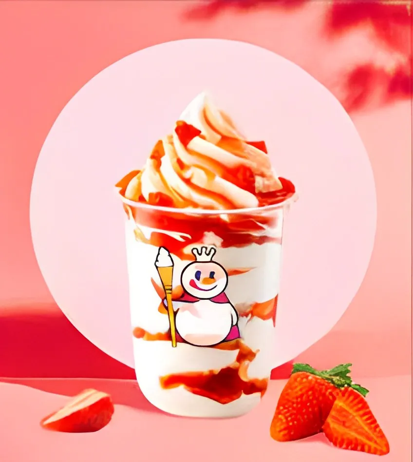

Lý do trà sữa Mixue thu hút giới trẻ hiện nay và review chi tiết quán
Chính thức bước vào thị trường Việt Nam vào năm 2018 và chỉ sau 5 năm, trà sữa Mixue đã có hơn 1,300 cửa hàng trên khắp cả nước. Thương hiệu này đã nhanh chóng gây tiếng vang và trở thành một trong những thương hiệu đồ uống được yêu thích hiện nay. Hãy cùng Space T khám phá xem điều gì đã tạo nên tên tuổi của Mixue nhé!1.Đôi nét về thương hiệu trà sữa nhượng quyền Mixue
Khởi đầu, Mixue là một cửa hàng bingsu nhỏ tại Hà Nam (Trung Quốc) vào năm 1997, CEO Zhang Hongchao đã đưa Mixue Bingcheng trở thành một thương hiệu trà sữa nhượng quyền với 21.582 cửa hàng (giữa năm 2022). Hiện tại, Mixue đã có mặt trên các quốc gia như Trung Quốc, Việt Nam, Singapore, Mỹ, Canada, Hàn Quốc và Malaysia.
Thương hiệu trà sữa MixueTuy lần đầu vào thị trường Việt Nam nhưng trà sữa Mixue đã vượt mặt các ông lớn cùng ngành như Highland, Starbucks, Phúc Long… về số lượng cửa hàng. Thương hiệu này đã phủ sóng các con phố tại Việt Nam, nhiều người còn ví von rằng: “Cứ bước ra đường là bắt gặp Mixue với tinh linh tuyết quen thuộc”
Vậy đâu là yếu tố góp phần trong thành công của trà sữa Mixue?
- Đầu tiên về sản phẩm, cửa hàng trà sữa Mixue có một menu khá đa dạng món đồ uống khác nhau. Sản phẩm tại đây luôn được nghiên cứu và cải tiến liên tục. Chính vì vậy, Mixue sở hữu một hương vị trà sữa ngon, đậm đà, không thua gì so với các thương hiệu lớn. Đồng thời, Mixue rất chú trọng vào chất lượng sản phẩm, có quy trình vệ sinh kỹ lưỡng.
- Về giá cả, trà sữa Mixue dường như không có đối thủ. Thứ nhất, khác với Katinat Saigon Kafe, thương hiệu thường lựa chọn vị trí cửa hàng ở các thành phố nhỏ, khu vực đông dân cư qua lại, mặt bằng khá khiêm tốn với chủ yếu đồ uống take-away.
- Nguyên nhân thứ hai đến từ chuỗi cung ứng hoàn chỉnh của Mixue. Để giảm được các chi phí, thương hiệu đã tối ưu hóa quy trình sản xuất và tự cung ứng các nguyên liệu quan trọng.
- Cuối cùng, Mixue đi theo mô hình nhượng quyền cùng với một chính sách vô cùng ưu đãi. Các cửa hàng nhượng quyền này đã đem lại một nguồn thu vô cùng lớn cho thương hiệu, lên đến 96%.
Thông tin chung về tiệm trà sữa Mixue:
- Địa chỉ: Quán có nhiều chi nhánh khác nhau tại thành phố Hồ Chí Minh, Hà Nội, Đà Lạt, Bình Dương, Bắc Giang… bạn có thể lựa chọn Katinat gần nhất để ghé qua và trải nghiệm. Thông tin về quán bạn có thể tìm trên Google maps hoặc đặt giao hàng tới tận nhà nếu không tiện.
- Fanpage: Mixue - Fanpage
- Email liên hệ: mxbc.mixuevietnam@gmail.com
- Điện thoại: 024 6666 2111
2.Khám phá không gian quán trà sữa Mixue
Với tông màu màu chủ đạo là đỏ và trắng cùng với linh vật mang tên Snow King (Tinh linh tuyết) - một nhân vật mặc áo choàng và mang cây trượng hình que kem. Mixue đã tạo ra một sự nhận diện cao trong lòng khách hàng.
Tinh linh tuyết (Snow King) - Linh vật đại diện của trà sữa Mixue2.1. Thiết kế bên ngoài của trà sữa Mixue
Không gian bên ngoài của trà sữa Mixue AustraliaThiết kế bên ngoài của Mixue trang trí rất thu hút khi cửa hàng lấy tông màu trắng và đỏ làm chủ đạo thể hiện được phong cách trẻ trung, năng động và hiện đại của thương hiệu. Đặc biệt, màu đỏ trong văn hóa Á Đông thường được xem là một màu đem lại may mắn, điềm lành. Ngoài ra, sự kết hợp giữa hai màu này cũng tạo nên sự hài hòa, bắt mắt, thu hút ánh nhìn của mọi người.
Không gian bên ngoài quán Mixue chi nhánh Điện Biên Phủ - Hàng XanhPhân khúc khách hàng của Mixue thường là học sinh, sinh viên. Chính vì thế, các chi nhánh Mixue thường nằm trên mặt tiền của các con đường gần trường học, văn phòng, khu mua sắm.
Góc nhìn từ bên ngoài của trà sữa Mixue - SydneyỞ Mixue Sydney, mặc dù diện tích của cửa hàng không quá lớn, chủ yếu phục vụ mang đi nhưng nó được thiết kế một cách tối ưu, linh hoạt và thông minh.
.webp) Chú tinh linh tuyết được đặt bên ngoài để chào những thức khách đến với Mixue - Singapore
Chú tinh linh tuyết được đặt bên ngoài để chào những thức khách đến với Mixue - Singapore
Chú tinh linh tuyết tinh tế được đặt bên ngoài cửa hàng Trà Sữa Mixue tại Singapore, tạo nên một điểm nhấn thu hút và độc đáo ngay từ cái nhìn đầu tiên. Được thiết kế với sự tinh tế và sáng tạo, tượng tinh linh tuyết không chỉ là một phần của trang trí mà còn là biểu tượng đáng yêu của quán.
Không khí ban đêm tại trà sữa Mixue chi nhánh 197 Hoàng Văn Thụ - Bắc GiangTại một số chi nhánh của Mixue, như 368 Đỗ Xuân Hợp, 457 Nguyễn Văn Luông, 7F Nơ Trang Long,... còn có không gian ngồi bên ngoài, phù hợp cho những ai thích tận hưởng không khí sôi động của thành phố hoặc các bạn học sinh, sinh viên tụ tập, hàn thuyên.
Chỗ ngồi bên ngoài của chi nhánh Mixue 368 Đỗ Xuân Hợp - TP. Thủ ĐứcKhông gian bên ngoài của Mixue được thiết kế đơn giản nhưng tinh tế. Các bộ bàn ghế được xếp gọn gàng, tạo không gian thoáng mát, thoải mái. Bên cạnh đó, quán còn được trang trí bằng những biểu tượng hình que kem, mang lại cảm giác vui tươi, trẻ trung. Một số cửa hàng Mixue còn được trang trí thêm tinh linh tuyết, cực kỳ đáng yêu.
 Hình ảnh bên ngoài tại Mixue 42 Cầu Giấy, Hà Nội
Hình ảnh bên ngoài tại Mixue 42 Cầu Giấy, Hà Nội
Mixue Cầu Giấy sáng tạo bằng cách sử dụng những chiếc ghế tượng thấp màu nâu, tạo nên không gian thoải mái và gần gũi, như những quán vỉa hè truyền thống tại Hà Nội.
Bố trí chiếc ghế tượng thấp này không chỉ giúp tối ưu hóa không gian, mà còn tạo ra những khu vực riêng tư, phù hợp cho cả nhóm bạn nhỏ hay những buổi gặp gỡ không gian cá nhân.
2.2. Không gian bên trong của quán trà sữa Mixue
Bên trong cửa hàng Mixue - chi nhánh tại SydneyBên trong cửa hàng, quầy pha chế được bố trí gọn gàng, sạch sẽ cùng với những chiếc máy kem, bình trà sữa vô cùng ngăn nắp. Màn hình menu bố trí trên cao vừa tầm nhìn cho khách hàng.
Một góc “sống ảo” cực xinh tại trà sữa Mixue (Sydney)Nếu bạn là người yêu thích chia sẻ trải nghiệm của mình, Mixue Sydney có một góc check-in lý tưởng. Với thiết kế đẹp mắt và sản phẩm sáng tạo, đây sẽ là điểm dừng chân tuyệt vời để lưu giữ những khoảnh khắc đáng nhớ của bạn tại cửa hàng. Đừng ngần ngại đánh dấu bằng một bức ảnh tại góc trưng bày này để chia sẻ sự trải nghiệm tuyệt vời với bạn bè và người thân.
Không gian khu vực ăn uống tại chỗ tại chi nhánh Mixue 43 Nguyễn Thái Học - Quận 1Tùy vào diện tích và vị trí của từng chi nhánh, không gian bên trong của Mixue có thể khác nhau, nhưng nhìn chung, nội thất của Mixue thường tập trung vào hai tông màu chủ đạo là đỏ và trắng. Các chi tiết nội thất trong quán được thiết kế đơn giản nhưng tinh tế, với các đường nét bo tròn mềm mại.
Không gian khu vực ăn uống tại chi nhánh Mixue 32 Nguyễn Văn Cừ - Quận 1Bàn ghế được sắp xếp gọn gàng, tạo không gian thoáng mát, thoải mái cho khách hàng. Trên tường của quán thường được treo các bức tranh nghệ thuật, mang đến cảm giác thư thái, dễ chịu.
Diện tích không quá lớn nhưng được sắp xếp gọn gàng và vệ sinh sạch sẽ (Mixue - Singapore)Có thể nhận thấy một điểm đặc biệt là, tại các chi nhánh Mixue ở các thành phố lớn như Singapore hay Sydney, quán chủ yếu tập trung vào dịch vụ take away, nên diện tích của các cửa hàng ở đây thường khá khiêm tốn.
Một khu vực dành cho những ai thích check-in với chú tinh linh “ca sĩ” này (Mixue - Sydney)Tuy nhiên, không gian bên trong luôn được chăm chút kỹ lưỡng. Ngoài ra, Mixue còn tận dụng không gian để tạo ra các khu vực check-in, giúp khách hàng khi đến có thể lưu giữ những kỷ niệm ý nghĩa của họ.
Những điểm check-in này không chỉ làm tôn lên vẻ đẹp của quán mà còn là cơ hội để khách hàng tương tác và chia sẻ trải nghiệm của mình trên các nền tảng xã hội. Điều này thực sự tạo nên một không gian tương tác và giao lưu, làm cho mỗi chuyến ghé thăm Mixue trở thành một hành trình đáng nhớ.
Không gian bên trong tại chi nhánh Mixue KTX Khu B - ĐHQG TP.Hồ Chí MinhTại các chi nhánh Mixue gần trường học như KTX khu B, quán sẽ được bố trí thêm băng ghế dài để giúp các bạn học sinh, sinh viên có thể đến đây họp nhóm, trò chuyện.
Không gian bên trong tại chi nhánh Mixue 40c Nguyễn Văn Đậu - Phú NhuậnThiết kế bên trong chi nhánh Nguyễn Văn Đậu được chia thành hai khu vực: quầy order - takeaway, khu vực ngồi tại chỗ khá rộng rãi, thoáng mát.
Không gian bên trong chi nhánh 235 Nguyễn Thị Minh Khai - Quận 1Chi nhánh Mixue 235 Nguyễn Thị Minh Khai, Quận 1 là một trong những chi nhánh có thiết kế mới lạ và độc đáo nhất của thương hiệu trà sữa này. Quán được bố trí chỗ ngồi bằng những tấm gối ngồi, cùng chiếc bàn màu trắng, tạo nên một không gian khá ấm cúng và gần gũi.
3. Khám phá những món đáng thử trên menu Mixue
Mặc dù không có chiến lược marketing mạnh mẽ như các thương hiệu trà sữa lớn khác, Mixue vẫn tìm được chỗ đứng cho mình nhờ menu đa dạng, chất lượng sản phẩm tốt và giá cả hợp lý.
Menu trà sữa MixueMenu Mixue là sự kết hợp giữa hương vị truyền thống và sự sáng tạo mới mẻ. Hiện tại Mixue đang tập trung vào ba mặt hàng chính: trà sữa, kem, trà trái cây.
3.1. Kem Mixue
Kem tươi là sản phẩm cốt lõi giúp Mixue có được tên tuổi như ngày hôm nay. Nhờ hương vị thơm ngon, béo ngậy, kết hợp với giá thành hợp lý, kem tươi Mixue đã nhanh chóng chiếm được cảm tình của người tiêu dùng Việt Nam.
Super sundae xoài - best seller tại Mixue  Super sundae dâu - best seller tại MixueNgoài kem ốc quế, Mixue còn nổi tiếng về loại sản phẩm Super sundae - một sự kết hợp giữa trà và kem tươi. Hai món best seller ở Mixue chính là Super sundae dâu và Super sundae xoài.
>>>>>>Tham khảo thêm Review chi tiết menu đồ uống và không gian nội thất tại trà sữa R&B Tea
3.2. Trà sữa Mixue
Trà sữa ở đây cũng rất nổi tiếng với đa dạng thức uống và hương vị hấp dẫn. Trà sữa ở đây được làm từ những nguyên liệu chất lượng, hương vị thơm ngon và giá cả hợp lý. Một trong những sản phẩm được nhiều bạn trẻ yêu thích nhất tại Mixue là trà sữa Bá Vương.
Tên gọi "Bá Vương" của món trà sữa này không chỉ mang ý nghĩa là "người làm nên nghiệp vương, nghiệp bá, chiếm cứ một phương trời riêng" mà còn là sự khẳng định về chất lượng và hương vị của sản phẩm.
Trà sữa Bá vương tại MixueTrà sữa Bá Vương được làm từ trà sữa nướng đậm đà, kết hợp với 3 loại topping là thạch dừa, pudding sữa và trân châu. Thạch dừa giòn dai, pudding sữa mềm mịn và trân châu dai dai, tất cả hòa quyện với nhau tạo nên một hương vị thơm ngon, hấp dẫn khó cưỡng.
3.3. Trà trái cây Mixue
Nếu bạn là một tín đồ trà và hoa quả, thì trà trái cây Mixue chắc chắn là một sự lựa chọn lý tưởng dành cho bạn.
Trà trái cây tại MixueTrà trái cây Mixue là một thức uống thơm ngon, bổ dưỡng được nhiều người yêu thích. Trà được pha chế từ những nguyên liệu tươi ngon, chất lượng cao, kết hợp với những loại trái cây tươi theo mùa. Chính vì vậy, mỗi ly trà trái cây Mixue đều mang một hương vị đặc trưng riêng, vừa thơm ngon, vừa thanh mát, vừa bổ dưỡng.
Từ những điểm nổi bật trên, Mixue hoàn toàn xứng đáng trở thành một địa điểm cho các bạn ghé qua và thưởng thức. Nếu bạn đang tìm kiếm một địa điểm để trải nghiệm những món đồ uống ngon, không gian đẹp thì trà sữa Mixue chính là sự lựa chọn cho bạn.